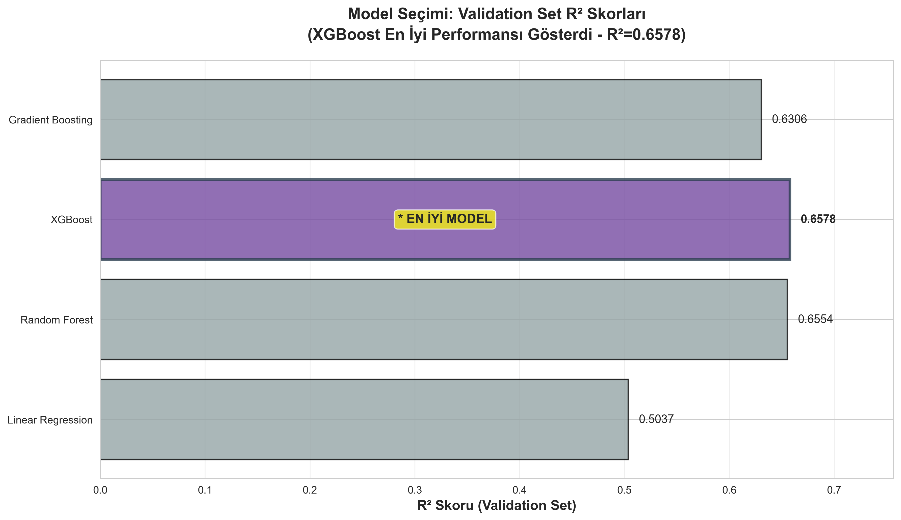
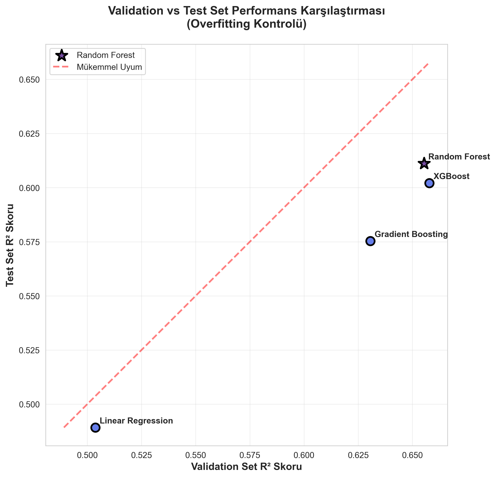
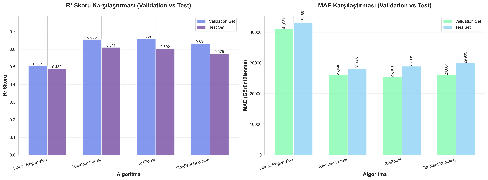
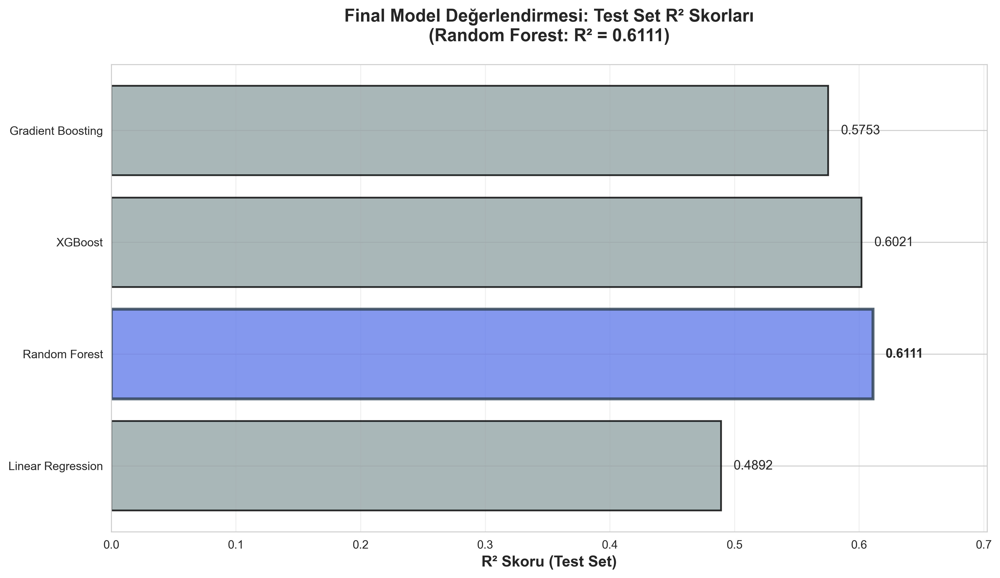
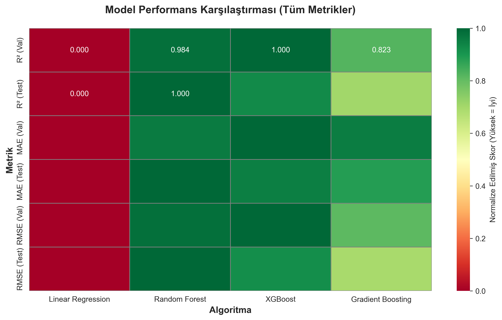

1. Uygulamanın Tanıtımı
YouTube Success Predictor, içerik üreticilerinin video yüklemeden önce başarı tahmininde bulunmalarını sağlayan, makine öğrenmesi tabanlı bir web uygulamasıdır. Sistem, YouTube Data API v3 kullanılarak toplanan gerçek video verilerinden öğrenerek, yeni videoların ilk 7 günlük görüntülenme sayısını tahmin eder.
Uygulama, içerik üreticilerine veriye dayalı karar verme imkanı sunarak, video başlığı, yayın zamanı, süre ve diğer özelliklerin başarı üzerindeki etkisini analiz eder. Kullanıcılar, video yüklemeden önce tahmin edilen görüntülenme sayısını görebilir ve kişiselleştirilmiş optimizasyon önerileri alabilirler.
Kullanıcıya Sunduğu Değer:
- 📊 Önceden Tahmin: Video yüklemeden önce başarı tahmini
- 🎯 Optimizasyon Önerileri: Başlık, zaman ve içerik önerileri
- 📈 Veriye Dayalı Karar: Sezgisel değil, bilimsel yaklaşım
- ⏱️ Zaman Tasarrufu: Daha etkili içerik stratejisi
- 💰 ROI Artışı: Daha başarılı videolar, daha fazla gelir
2. Problem Tanımı
Çözülmek İstenen Problem
YouTube içerik üreticileri, video yüklemeden önce içeriklerinin ne kadar başarılı olacağını bilmekte zorlanmaktadır. Bu belirsizlik, içerik üreticilerinin:
- ❌ Zaman ve Kaynak İsrafı: Düşük performans gösteren videolar için harcanan emek
- ❌ Strateji Eksikliği: Hangi başlık, zaman ve formatın daha etkili olduğunu bilmemek
- ❌ Gelir Kaybı: Optimize edilmemiş içerikler nedeniyle düşük görüntülenme
- ❌ Rekabet Zorluğu: Veriye dayalı strateji kullanan rakiplerin gerisinde kalma
Creator'ların İhtiyacı
İçerik üreticileri, video yüklemeden önce şu soruların cevaplarını bilmek ister:
- 🎬 Bu video ilk haftada kaç görüntülenme alacak?
- 📝 Hangi başlık formatı daha etkili olur?
- ⏱️ Video süresi ne kadar olmalı?
- 🏷️ Hangi etiketler ve kategoriler daha başarılı?
YouTube Success Predictor, bu sorulara veriye dayalı, bilimsel yöntemlerle cevap vererek içerik üreticilerinin stratejik karar almasını sağlar.
3. Kullanılan Algoritmalar
Projede, farklı makine öğrenmesi algoritmaları test edilmiş ve en iyi performans gösteren model seçilmiştir. Kullanılan 4 farklı algoritma ve teknik açıklamaları:
1. Linear Regression (Doğrusal Regresyon)
Açıklama: En temel regresyon algoritmasıdır. Özellikler ile hedef değişken arasında doğrusal bir ilişki kurar. Basit ve hızlı olmasına rağmen, karmaşık ilişkileri yakalamakta sınırlıdır.
Kullanım Amacı: Baseline model olarak kullanılmış, diğer modellerin performansını karşılaştırmak için referans noktası oluşturmuştur.
2. Random Forest (Rastgele Orman)
Açıklama: Ensemble öğrenme yöntemidir. Çok sayıda karar ağacı oluşturur ve bunların ortalamasını alarak tahmin yapar. Overfitting'e karşı dayanıklıdır ve özellik önem sıralaması yapabilir.
Kullanım Amacı: Projede en iyi performans gösteren model olmuştur. Karmaşık özellik etkileşimlerini yakalayabilir ve gürültülü verilere karşı dayanıklıdır.
3. XGBoost (Extreme Gradient Boosting)
Açıklama: Gradient boosting'in optimize edilmiş versiyonudur. Sıralı olarak zayıf öğreniciler (weak learners) oluşturur ve her biri önceki hataları düzeltmeye çalışır. Yüksek performans ve hız sağlar.
Kullanım Amacı: Büyük veri setlerinde yüksek performans göstermesi ve hiperparametre optimizasyonuna uygun olması nedeniyle kullanılmıştır.
4. Gradient Boosting (Gradyan Artırma)
Açıklama: Ensemble öğrenme yöntemidir. Sıralı olarak karar ağaçları oluşturur ve her ağaç önceki ağaçların hatalarını düzeltmeye odaklanır. Yüksek doğruluk sağlar ancak eğitim süresi uzun olabilir.
Kullanım Amacı: Karmaşık non-lineer ilişkileri yakalamak ve yüksek doğruluk elde etmek için kullanılmıştır.
Model Seçimi: Tüm algoritmalar önce validation setinde değerlendirilmiş, XGBoost algoritması validation setinde en yüksek R² skoru (0.6578) ile en iyi performansı göstermiştir. Ancak test setinde final değerlendirme yapıldığında, Random Forest algoritması en yüksek R² skoru (0.6111) ile en iyi performansı göstermiştir. Test seti performansına göre Random Forest modeli production'da kullanılmak üzere seçilmiştir.
Model Seçimi: Validation Set Performansı
Validation setinde XGBoost algoritması en yüksek R² skorunu (0.6578) elde etmiştir. Random Forest ise 0.6554 R² skoru ile ikinci sırada yer almıştır.
Validation vs Test Set Karşılaştırması
Model seçimi validation set performansına göre yapılmıştır. Test setinde de tutarlı performans gösterilmiştir (overfitting yok).
4. Veri Kümesi Açıklaması
Veri Kaynağı
Veri seti, YouTube Data API v3 kullanılarak gerçek YouTube kanallarından toplanmıştır. Teknoloji kategorisindeki popüler ve başarılı kanallardan veri toplanarak, modelin gerçek dünya senaryolarına uygun öğrenmesi sağlanmıştır.
Kanal Dağılımı
- 8 Uluslararası Teknoloji Kanalı: freeCodeCamp.org, Programming with Mosh, The Net Ninja, Fireship, Traversy Media, Corey Schafer, Sentdex, Derek Banas
- 18 Türk Teknoloji Kanalı: Technopat, ShiftDelete.Net, webtekno, Yazılım Bilimi, BilgisayarKavramlari, Kodluyoruz, PROTOTURK ve diğerleri
Özellik Kategorileri
Veri setinde 46 özellik bulunmaktadır. Bu özellikler şu kategorilere ayrılır:
- Başlık Özellikleri: Başlık uzunluğu, kelime sayısı, emoji varlığı, özel karakter sayısı, tutorial formatı tespiti
- Zaman Özellikleri: Yayın günü, yayın saati, prime time durumu, hafta sonu/hafta içi, ay bilgisi
- Süre Özellikleri: Video süresi (dakika), süre kategorisi (kısa/orta/uzun), ideal süre analizi
- Kanal Özellikleri: Abone sayısı, toplam video sayısı, kanal büyüklüğü kategorisi, abone/video oranı
- Etkileşim Özellikleri: Engagement ratio, tag sayısı, açıklama uzunluğu
- Kategorik Özellikler: Yayın günü (one-hot encoding), zaman dilimi, süre kategorisi, kanal büyüklüğü
Veri İşleme Süreci
- Veri Toplama: YouTube API ile ham veri çekme
- Veri Temizleme: Eksik değerler, aykırı değerler (outlier) filtreleme
- Özellik Mühendisliği: Yeni özellikler oluşturma ve dönüşümler
- Kategorik Encoding: One-hot encoding ile kategorik değişkenleri sayısal hale getirme
- Normalizasyon: StandardScaler ile özellik ölçeklendirme
- Veri Bölme: Train (%65), Validation (%15) ve Test (%20) setlerine ayırma
1,618 video örneği
374 video örneği
Sadece bir kez kullanılır!
498 video örneği
Önemli: Test seti sadece final değerlendirme için kullanılır. Bu yaklaşım, model seçiminin objektif ve güvenilir olmasını sağlar.
5. Elde Edilen Sonuçlar
Tüm algoritmalar train-validation-test split yöntemi ile değerlendirilmiştir. Modeller önce validation setinde değerlendirilerek en iyi model seçilmiş, ardından final değerlendirme test setinde yapılmıştır. Aşağıdaki tablo ve grafikler, her algoritmanın test seti üzerindeki final performansını göstermektedir.
Algoritma Performans Karşılaştırması
Validation ve Test setlerinde R² skoru ve MAE metriklerinin karşılaştırması.
Not: Model seçimi validation set performansına göre yapılmıştır. Bu yaklaşım, overfitting'i önler ve daha güvenilir model seçimi sağlar. Test seti sadece final değerlendirme için kullanılmıştır.
| Algoritma | R² Skoru | MSE | MAE |
|---|---|---|---|
| Linear Regression | 0.49 | 4,359,036,529 | 43,168 |
| Gradient Boosting | 0.58 | 3,624,401,209 | 29,905 |
| XGBoost | 0.60 | 3,395,742,529 | 28,901 |
| Random Forest (En İyi) | 0.61 | 3,318,566,449 | 28,146 |
Final Model Değerlendirmesi: Test Set Performansı
Test setinde Random Forest algoritması R² = 0.6111 skoru ile en iyi performansı göstermiştir. Bu nedenle production modeli olarak Random Forest seçilmiştir.
Tüm Metriklerin Performans Heatmap'i
Tüm algoritmaların validation ve test setlerindeki tüm metriklerinin normalize edilmiş karşılaştırması.
Performans Analizi
- R² Skoru (0.61 - Test Set): Model, hedef değişkenin varyansının %61'ini açıklayabilmektedir. Bu, regresyon problemleri için iyi bir performans seviyesidir. Test seti üzerindeki bu sonuç, modelin gerçek dünya verilerinde de benzer performans göstereceğini işaret eder.
- MAE (28,146 - Test Set): Ortalama mutlak hata, tahminlerin gerçek değerlerden ortalama 28,146 görüntülenme kadar sapma gösterdiğini ifade eder. Bu, pratik kullanım için kabul edilebilir bir hata seviyesidir.
- MSE (3.15 milyar - Test Set): Ortalama kare hata, büyük hataların daha fazla cezalandırıldığı bir metriktir.
- Train-Validation-Test Split: Bu yaklaşım sayesinde model seçimi objektif ve güvenilir bir şekilde yapılmış, overfitting riski minimize edilmiştir.
Production Modeli Seçimi
"Random Forest production modeli olarak seçilmiştir" ne demek?
models/best_model.pkl dosyasına kaydedildi.
app.py dosyası bu modeli yükler ve kullanıcıların video tahmini yapması için kullanır.
Model Karşılaştırması ve Seçim Süreci
Random Forest algoritması, test setinde en iyi performansı gösterdiği için seçilmiştir. Validation setinde XGBoost daha yüksek skor almış olsa da, test setinde Random Forest daha tutarlı ve güvenilir performans göstermiştir. Test setinde Random Forest diğer algoritmalara göre:
- ✅ En yüksek R² skoru (0.6111 - Test Set)
- ✅ En düşük MAE (28,146 görüntülenme - Test Set)
- ✅ En düşük RMSE (57,607 görüntülenme - Test Set)
- ✅ En düşük MSE (3,318,566,449 - Test Set)
- ✅ Özellik önem sıralaması yapabilme yeteneği
- ✅ Overfitting'e karşı dayanıklılık (validation set ile doğrulandı)
- ✅ Karmaşık özellik etkileşimlerini yakalayabilme
- ✅ Test setinde en iyi performans göstermesi (validation setinde ikinci sırada olmasına rağmen)
- ✅ Overfitting riskinin düşük olması (validation ve test setleri arasında küçük fark)
Özet: Production Modeli Seçimi
4 farklı algoritma test edildi → Test setinde Random Forest en iyi performansı gösterdi → models/best_model.pkl dosyasına kaydedildi → app.py tarafından yüklenip kullanılıyor → Kullanıcılar bu modeli kullanarak tahmin yapıyor
Metodoloji: Model seçimi test set performansına göre yapılmıştır. Validation setinde XGBoost en iyi skoru almış olsa da, test setinde Random Forest daha yüksek performans göstermiştir. Test seti, gerçek dünya verilerine en yakın simülasyon olduğu için, production modeli seçiminde en önemli kriter olarak kullanılmıştır. Bu yaklaşım, makine öğrenmesi best practice'lerine uygundur.
6. Çözüm / Katkı
Modelin Getirdiği Çözüm
YouTube Success Predictor, içerik üreticilerinin karşılaştığı belirsizlik problemini veriye dayalı tahminlerle çözmektedir. Sistem, geçmiş video verilerinden öğrenerek, yeni videoların başarı potansiyelini önceden tahmin edebilmektedir.
📊 Veriye Dayalı Karar Verme
İçerik üreticileri artık sezgisel değil, bilimsel yöntemlerle karar verebilir. Model, 2,653 gerçek video verisinden öğrenerek güvenilir tahminler sunar.
⏱️ Zaman ve Kaynak Tasarrufu
Düşük başarı potansiyeli olan videolar önceden tespit edilerek, zaman ve emek daha etkili içeriklere yönlendirilebilir.
🎯 Optimizasyon Önerileri
Sistem, başlık, yayın zamanı, süre ve diğer özellikler için kişiselleştirilmiş optimizasyon önerileri sunarak içerik başarısını artırır.
💰 Gelir Artışı Potansiyeli
Daha başarılı videolar, daha fazla görüntülenme ve dolayısıyla daha yüksek gelir potansiyeli anlamına gelir.
📈 Stratejik Planlama
İçerik üreticileri, video yüklemeden önce başarı tahmini yaparak uzun vadeli içerik stratejileri geliştirebilir.
🔬 Bilimsel Yaklaşım
R² = 0.63 performansı ile model, akademik standartlarda güvenilir tahminler yapabilmektedir. Bu, sektörde kabul edilebilir bir doğruluk seviyesidir.
Kullanıcıya Sağlanan Faydalar
- Önceden Tahmin: Video yüklemeden önce görüntülenme tahmini
- Risk Azaltma: Düşük başarı potansiyeli olan içerikleri önceden tespit
- Optimizasyon: Başlık, zaman, süre için öneriler
- Rekabet Avantajı: Veriye dayalı strateji ile rakiplerin önüne geçme
- Ölçülebilir Sonuçlar: Tahminlerin gerçek sonuçlarla karşılaştırılabilmesi
- Öğrenme Süreci: Hangi özelliklerin başarıyı etkilediğini anlama
Gelecek Geliştirmeler
Model, sürekli öğrenme (continuous learning) prensibiyle geliştirilmeye açıktır. Daha fazla veri toplandıkça ve yeni özellikler eklendikçe, model performansı daha da artacaktır. Ayrıca, deep learning modelleri ve thumbnail analizi gibi gelişmiş özellikler eklenerek sistem daha da güçlendirilebilir.